Reading Club · 中文论文精读 · 阅读与来源核查：2026-09-30
冻结权重，组合物理：神经算子分裂的测试时泛化
Test-time Generalization for Physics through Neural Operator Splitting
Louis Serrano · Jiequn Han · Edouard Oyallon · Shirley Ho · Rudy Morel2602.00884v2.pdf：arXiv v2，2026-08-10，31 页。版本页面 · 原文 PDF · 官方代码
核心结论： 把已学会的物理演化组件保存为字典，利用目标轨迹的短观测窗口搜索组合，再按算子分裂推进时间，可以在固定模型权重下预测部分未见过的参数和耦合物理。实验支持的是四类周期边界、完整场观测的数值基准；它仍依赖目标观测、可迁移的组件和额外推理计算，尚未证明能预测字典完全没有的任意新物理。
阅读范围：正文第 1–9 页；参考文献第 9–11 页用于确认依赖；附录 A–D 第 12–31 页全部阅读。17 幅原图、9 张原表、2 个算法均已核对。报告页码一律指本 PDF 页码，与该版本印刷页码一致。公式已离线预渲染并保留 LaTeX 源码。按用户要求跳过浏览器测试。
目录 先抓住三个判断 问题、贡献与“零样本”的边界 理解方法需要区分的三个对象 完整方法：从训练轨迹到目标动力学 训练、成本与理论适用条件 实验怎样检验“组合”和“外推” 主要结果：哪些优势成立，哪些需要限定 全部九张结果表与读法 可信度：预测改善与物理识别要分开判断 可借鉴的做法：如何把它迁移到别的任务 接着做什么：按证据缺口安排可检验实验 全部原文插图与逐图解释 材料、来源与复现边界 覆盖核对与检查说明 原图索引： 图 1 · 图 2 · 图 3 · 图 4 · 图 5 · 图 6 · 图 7 · 图 8 · 图 9 · 图 10 · 图 11 · 图 12 · 图 13 · 图 14 · 图 15 · 图 16 · 图 17
原表索引： 表 1 · 表 2 · 表 3 · 表 4 · 表 5 · 表 6 · 表 7 · 表 8 · 表 9
先抓住三个判断
第一，搜索改变的是算子组合，而不是神经网络权重。 DISCO 从训练轨迹生成不同的神经动力学算子；这些算子在测试时被当作固定候选项。新轨迹提供辨别哪些候选项适用的信息。组合之后，每个时间步仍调用已有算子，不需要对目标系统重新训练。这里的创新重点是把可组合的表示与测试时搜索连接起来，不是提出新的高阶数值分裂公式。（第 2–4 页，§4）
第二，论文的 zero-shot 有观测条件。 默认使用目标轨迹连续 L = 16 L=16 L = 16
第三，外推能力来自组件可以相加的结构。 训练分布只包含分离的物理演化，而测试分布加入耦合或更大的系数；适合的算子组合扩展了可表达的动力学范围。新增计算能扩大搜索，但不能自动创造字典缺失的生成机制。附录的未知非线性扰动实验给出了这个边界的直接证据。（第 3 页，§3；第 17 页，表 4）
建议先读方法与两张主结果表，再看图 1–5；需要理解长期误差和复杂流场时读图 6–17。附录实验提供了比主摘要更具体的可信度条件：训练配方很重要，搜索有可观的墙钟开销，参数辨识会在模型失配下产生偏差。
问题、贡献与“零样本”的边界
这篇论文研究的重点是：一个只学过若干物理作用的神经代理，在测试时遇到更强系数或新的物理组合，能否通过额外计算继续预测。作者把动力学写成参数化偏微分方程：
∂ t u = ∑ k = 1 K μ k F k ( u , ∇ x u , ∇ x 2 u , … ) . \partial_t u=\sum_{k=1}^{K}\mu_kF_k\bigl(u,\nabla_xu,\nabla_x^2u,\ldots\bigr). ∂ t u = k = 1 ∑ K μ k F k ( u , ∇ x u , ∇ x 2 u , … ) . 这里 u u u F k F_k F k μ k \mu_k μ k ［PDF 第 3 页，§3］
本文的 zero-shot 是“模型权重保持不变”，但测试时有目标系统观测。 输入是一条测试轨迹的 L L L H H H L = 16 L=16 L = 16 15 15 15 ［PDF 第 3–4、6 页，§3、§5.1］
方法的三个具体贡献是：用 DISCO 把训练动力学编码成可调用的算子字典；用 beam search 从固定字典中搜索组合；用神经算子的时间流分裂实现右端项相加。搜索开销可以随分布外程度和计算预算变化，所选算子的训练系数标签还能用于参数估计。作者把该框架称为首个把搜索式测试适应和计算扩展带入神经 PDE 求解器的工作；本报告将其保留为作者的新颖性主张，未做全面文献优先权检索。［PDF 第 2–4、9 页，§1、§4、§5.4］
理解方法需要区分的三个对象
对象 含义 在方法中的作用
物理右端项 F k F_k F k 真实 PDE 中一种机制的时间导数贡献。 说明为什么新的系统有可能由已有机制相加构成。 学习的右端项 f θ i f_{\theta_i} f θ i 一个 U-Net 神经网络，对当前状态输出时间导数近似；参数由超网络生成。 它是可被数值积分器调用的模块，不是未来一帧本身。 时间流 Φ i h \Phi_i^h Φ i h 把 u ˙ = f θ i ( u ) \dot u=f_{\theta_i}(u) u ˙ = f θ i ( u ) h h h 分裂时复合的是这些映射。原论文将其记作 f i h f_i^h f i h Φ i h \Phi_i^h Φ i h
特别需要避免两种混淆：相加的是动力学右端项，而不是把两张预测图像相加；复合的是时间流，而不是把两个网络的权重向量直接相加。超网络参数 α \alpha α θ i \theta_i θ i μ k \mu_k μ k ［PDF 第 4 页，§4.1–4.3；第 14–16 页，附录 B.3］
四组物理机制如何拆分
线性对流–扩散的方程是 ∂ t u = D ∂ x x u − c ∂ x u \partial_tu=D\partial_{xx}u-c\partial_xu ∂ t u = D ∂ xx u − c ∂ x u
∂ t u + ∂ x ( α u 2 − β ∂ x u + γ ∂ x x u ) = 0 , \partial_tu+\partial_x\bigl(\alpha u^2-\beta\partial_xu+\gamma\partial_{xx}u\bigr)=0, ∂ t u + ∂ x ( α u 2 − β ∂ x u + γ ∂ xx u ) = 0 , 其右端项分别为 − α ∂ x ( u 2 ) -\alpha\partial_x(u^2) − α ∂ x ( u 2 ) β ∂ x x u \beta\partial_{xx}u β ∂ xx u − γ ∂ x x x u -\gamma\partial_{xxx}u − γ ∂ xxx u α \alpha α ［PDF 第 5、12 页，§5.1、附录 A.1–A.2，式 (1)、(3)］
Gray–Scott 由两个物种浓度 A , B A,B A , B
∂ t A = D A ∇ 2 A − δ A B 2 + F ( 1 − A ) , ∂ t B = D B ∇ 2 B + δ A B 2 − ( F + k ) B . \begin{aligned}
\partial_tA&=D_A\nabla^2A-\delta AB^2+F(1-A),\\
\partial_tB&=D_B\nabla^2B+\delta AB^2-(F+k)B.
\end{aligned} ∂ t A ∂ t B = D A ∇ 2 A − δ A B 2 + F ( 1 − A ) , = D B ∇ 2 B + δ A B 2 − ( F + k ) B . 此处 D A , D B D_A,D_B D A , D B δ \delta δ F F F k k k δ = F = 0 \delta=F=0 δ = F = 0 D A = D B = k = 0 D_A=D_B=k=0 D A = D B = k = 0 δ = 1 \delta=1 δ = 1 ［PDF 第 6、12–13 页，§5.1、附录 A.3，式 (5)–(6)］
最后一组用二维涡量 ω \omega ω
∂ t ω + u ⋅ ∇ ω = ν Δ ω , u = ( − ∂ y ψ , ∂ x ψ ) , − Δ ψ = ω . \partial_t\omega+\mathbf u\cdot\nabla\omega=\nu\Delta\omega,
\qquad\mathbf u=(-\partial_y\psi,\partial_x\psi),\qquad-\Delta\psi=\omega. ∂ t ω + u ⋅ ∇ ω = ν Δ ω , u = ( − ∂ y ψ , ∂ x ψ ) , − Δ ψ = ω . 训练看过无黏性的 Euler 作用和独立热扩散，测试则是它们的 Navier–Stokes 组合。ν \nu ν ψ \psi ψ u \mathbf u u ［PDF 第 6、13 页，§5.1、附录 A.4，式 (7)–(9)］
完整方法：从训练轨迹到目标动力学
1．用 DISCO 学出可迁移的动力学模块
一个 transformer 超网络 ψ α \psi_\alpha ψ α θ \theta θ
θ = ψ α ( u 1 : L ) , u ^ ( t L + Δ t ) = u ( t L ) + ∫ t L t L + Δ t f θ ( u ( t ) ) d t . \theta=\psi_\alpha(u^{1:L}),\qquad
\widehat u(t_L+\Delta t)=u(t_L)+\int_{t_L}^{t_L+\Delta t}f_\theta(u(t))\,\mathrm dt. θ = ψ α ( u 1 : L ) , u ( t L + Δ t ) = u ( t L ) + ∫ t L t L + Δ t f θ ( u ( t )) d t . 这与原文第 4 页的结构一致；原式以帧序号 L , L + 1 L,L+1 L , L + 1 t L t_L t L Δ t \Delta t Δ t ［PDF 第 4 页，§4.1］
2．离线建立算子字典
预训练完成后，对训练轨迹编码，形成 θ i = ψ α ( u i 1 : L ) \theta_i=\psi_\alpha(u_i^{1:L}) θ i = ψ α ( u i 1 : L ) { f θ i } i = 1 N \{f_{\theta_i}\}_{i=1}^{N} { f θ i } i = 1 N ［PDF 第 4、6、9、18 页，§4.1、§5.1、§5.4、附录 C.5］
3．用短观测评价候选组合
对一个候选 S S S Φ S Δ t \Phi_S^{\Delta t} Φ S Δ t
NRMSE ( u , u ^ ) = ∥ u − u ^ ∥ 2 ∥ u ∥ 2 , \operatorname{NRMSE}(u,\widehat u)=\frac{\|u-\widehat u\|_2}{\|u\|_2}, NRMSE ( u , u ) = ∥ u ∥ 2 ∥ u − u ∥ 2 , L ( S ) = 1 L − 1 ∑ t = 1 L − 1 NRMSE ( u t e s t t + 1 , Φ S Δ t ( u t e s t t ) ) , S ∗ = arg min S ⊆ { f 1 , … , f N } L ( S ) . \mathcal L(S)=\frac{1}{L-1}\sum_{t=1}^{L-1}
\operatorname{NRMSE}\!\left(u^{t+1}_{\mathrm{test}},\Phi_S^{\Delta t}(u^t_{\mathrm{test}})\right),
\qquad S^*=\mathop{\arg\min}_{S\subseteq\{f_1,\ldots,f_N\}}\mathcal L(S). L ( S ) = L − 1 1 t = 1 ∑ L − 1 NRMSE ( u test t + 1 , Φ S Δ t ( u test t ) ) , S ∗ = arg min S ⊆ { f 1 , … , f N } L ( S ) . 作者称之为 NRMSE，但给出的定义是相对 L 2 L^2 L 2 u t e s t t u^t_{\mathrm{test}} u test t ［PDF 第 4、8 页，§4.2、图 4］
4．用 beam search 逐层增加组合长度
先评价所有单个算子，保留误差最低的 B B B
给每个保留的组合追加一个未选过的字典索引，形成下一层候选。
对候选重新计算 L \mathcal L L B B B
相对误差改善小于阈值 τ \tau τ
主实验 B = 4 B=4 B = 4 B = 8 B=8 B = 8 M = 5 M=5 M = 5 5 % 5\% 5% B = 1 B=1 B = 1 ［PDF 第 4、6、15 页，§4.2、§5.1、算法 1］
外推不是无限制重复同一算子。 论文算法 1 明确排除已选字典索引，允许的是不同字典条目的贡献相加。例如，两个不同纯对流模块的系数加和可以超过单项训练上限。不同条目可能属于同一种物理作用，但仍是不同索引；有限字典、长度限制、没有负号和连续系数优化，共同限定可表达范围。这里的“任意新物理”应理解为已知模块的新的组合，而非任意未见右端项。［PDF 第 3–4、15 页，§3、§4.2、算法 1；表达范围为报告推断］
Uniform 是比较用的另一种搜索策略。论文算法 2 先取最佳单算子，再均匀选择长度 m ∈ { 1 , … , M } m\in\{1,\ldots,M\} m ∈ { 1 , … , M } M = 4 M=4 M = 4 100 100 100 200 200 200 ［PDF 第 6、15 页，§5.1、算法 2］
5．用算子分裂实现右端项加和
对于 u ˙ = f 1 ( u ) + f 2 ( u ) \dot u=f_1(u)+f_2(u) u ˙ = f 1 ( u ) + f 2 ( u )
u ^ n + 1 = Φ 2 Δ t ∘ Φ 1 Δ t ( u n ) . \widehat u^{n+1}=\Phi_2^{\Delta t}\circ\Phi_1^{\Delta t}(u^n). u n + 1 = Φ 2 Δ t ∘ Φ 1 Δ t ( u n ) . Strang 则把外围算子分成两个半步，中间算子完整一步：
u ^ n + 1 = Φ 1 Δ t / 2 ∘ Φ 2 Δ t ∘ Φ 1 Δ t / 2 ( u n ) . \widehat u^{n+1}=\Phi_1^{\Delta t/2}\circ\Phi_2^{\Delta t}\circ\Phi_1^{\Delta t/2}(u^n). u n + 1 = Φ 1 Δ t /2 ∘ Φ 2 Δ t ∘ Φ 1 Δ t /2 ( u n ) . 每一种机制累计作用时长都是 Δ t \Delta t Δ t 算子的执行顺序 ，不是逆转物理时间，所以没有要求对热扩散做病态的反向积分。［PDF 第 4、14–16 页，§4.3、附录 B.3；正步长由公式直接可见］
多个算子的 Lie 扩展是：
u ^ n + 1 = Φ i m Δ t ∘ Φ i m − 1 Δ t ∘ ⋯ ∘ Φ i 1 Δ t ( u n ) . \widehat u^{n+1}=\Phi_{i_m}^{\Delta t}\circ\Phi_{i_{m-1}}^{\Delta t}\circ\cdots\circ\Phi_{i_1}^{\Delta t}(u^n). u n + 1 = Φ i m Δ t ∘ Φ i m − 1 Δ t ∘ ⋯ ∘ Φ i 1 Δ t ( u n ) . 附录 B.3 给出的对称 Strang 扩展为：
u ^ n + 1 = Φ i 1 Δ t / 2 ∘ ⋯ ∘ Φ i m − 1 Δ t / 2 ∘ Φ i m Δ t ∘ Φ i m − 1 Δ t / 2 ∘ ⋯ ∘ Φ i 1 Δ t / 2 ( u n ) . \widehat u^{n+1}=
\Phi_{i_1}^{\Delta t/2}\circ\cdots\circ\Phi_{i_{m-1}}^{\Delta t/2}\circ
\Phi_{i_m}^{\Delta t}\circ
\Phi_{i_{m-1}}^{\Delta t/2}\circ\cdots\circ\Phi_{i_1}^{\Delta t/2}(u^n). u n + 1 = Φ i 1 Δ t /2 ∘ ⋯ ∘ Φ i m − 1 Δ t /2 ∘ Φ i m Δ t ∘ Φ i m − 1 Δ t /2 ∘ ⋯ ∘ Φ i 1 Δ t /2 ( u n ) . 复合符号按从右到左执行。对于一般不对易的算子，顺序会改变有限步长近似；即使采用对称分裂，把哪个模块放到中心也可能影响误差。因此正文的“子集”写法省略了执行顺序这一实现细节。选好组合之后，每一步都按同一序列分裂，从最后观测帧开始自回归到预测区间。［PDF 第 4、14–16 页，§4.2–4.3、附录 B.3；顺序影响为对公式的分析］
参数识别为何可解释，也为何可能不唯一
作者通过每个字典条目对应的训练参数标签，估计测试系统的系数；用统一向量记号重写为：
μ ^ = ∑ i ∈ S ∗ μ i . \widehat{\boldsymbol\mu}=\sum_{i\in S^*}\boldsymbol\mu_i. μ = i ∈ S ∗ ∑ μ i . 它适合参数作为右端项线性系数、模块学得准确、观测足以辨识的场景。这个过程不是输出全新的符号表达式，也不保证不同组合只有一个答案。未观测的模式、弱激发的机制或缺失的物理项，都可能让预测误差较小的组合得到有偏的参数。附录 C.2 的未见非线性扰动已经显示扩散系数估计随缺项增强而偏离，说明“拟合好”与“恢复真实机制”需要分开验收。［PDF 第 9、17 页，§5.4、附录 C.2；可辨识性条件为报告判断］
训练、成本与理论适用条件
训练 recipe 不是无关细节
为了让同一模块能在不同状态上使用，作者调整了原 DISCO 的训练。对流–扩散使用两条同动力学轨迹：编码第一条轨迹生成算子，随后预测第二条轨迹的下一帧。Combined equation 和 Gray–Scott 使用环境标签及 EMA 更新的 codebook，训练时以各 50 % 50\% 50% ［PDF 第 14、18 页，附录 B.2、C.4］
这些改动促使模块编码更接近动力学而非单条初始状态。分裂还会把模块应用到其自身纯物理轨迹之外的中间状态，所以训练的状态覆盖十分关键。Gray–Scott 的分项训练初态先经完整反应–扩散演化随机时长；扩散任务的涡量初态取自 Euler 轨迹的中间快照。训练仍然以分项演化为目标，但初态分布已经有意识地覆盖耦合动力学可能产生的状态。迁移时不能只复制“分别训练，再组合”而忽略这个分布匹配。［PDF 第 13 页，附录 A.3–A.4；最后一句为报告判断］
实现要素 论文提供的信息 定位
Transformer 编码器 隐藏宽度 128 128 128 4 4 4 4 4 4 8 8 8 8 × 8 8\times8 8 × 8 PDF 第 14 页，B.1 潜在瓶颈与算子网络 三个任务的瓶颈通道为 2 , 3 , 2 2,3,2 2 , 3 , 2 8 8 8 2 2 2 PDF 第 14 页，B.1 神经 ODE 积分 RK4；对流–扩散、combined、Gray–Scott 的积分时长分别 0.1 , 0.016 , 1 0.1,0.016,1 0.1 , 0.016 , 1 PDF 第 14 页，B.1 优化 前两个任务训练 300,000 300{,}000 300 , 000 100,000 100{,}000 100 , 000 3 × 10 − 4 3\times10^{-4} 3 × 1 0 − 4 10 − 4 10^{-4} 1 0 − 4 PDF 第 14 页，B.1 字典规模 对流–扩散 256 256 256 96 96 96 40 40 40 17 17 17 PDF 第 6 页，§5.1
附录 B.1 没有同样完整地列出 Navier–Stokes 对应的潜在瓶颈、训练步数和积分时长。以上表格不将前三项配置自行延伸到第四个任务。全部方法都从头在本文设计的数据上训练；这些比较不能直接代表未改动的公开通用 foundation model 的性能。［PDF 第 6、14 页，§5.1、B.1］
计算量需要同时看候选数和每个候选的积分成本
正文给出的 beam 每层候选评价数为 O ( B N ) O(BN) O ( BN ) O ( B N L ) O(BNL) O ( BN L ) m m m 2 m − 1 2m-1 2 m − 1 r r r r r r C f l o w C_{\mathrm{flow}} C flow
O ( B N ( L − 1 ) r ( 2 m − 1 ) C f l o w ) . O\!\left(BN(L-1)\,r(2m-1)C_{\mathrm{flow}}\right). O ( BN ( L − 1 ) r ( 2 m − 1 ) C flow ) . 这是报告根据分裂结构展开的成本说明，不是论文提出的新定理。RK4 的一次积分还要多次评价右端项；字典编码可以离线完成，候选能部分批处理，但每个分裂序列内部具有前后依赖。Uniform 的 O ( T ) O(T) O ( T ) ［PDF 第 4、9、14–16 页，§4.2、§6、B.1、B.3］
经典分裂阶数不等于神经代理的总误差保证
论文写 Lie 与 Strang 把近似误差从 O ( Δ t 2 ) O(\Delta t^2) O ( Δ t 2 ) O ( Δ t 3 ) O(\Delta t^3) O ( Δ t 3 ) O ( Δ t 3 ) O(\Delta t^3) O ( Δ t 3 ) ［PDF 第 4、14–16 页，§4.3、B.3；局部/全局阶的区分为对经典公式的解释］
本文没有给出学习算子的收敛定理、稳定性证明或所有 PDE 通用误差上界。附录 C.1 经验上检查了热扩散和色散模块的不同训练质量；它支持该实验中“较差模块限制组合效果”的趋势，但不是弱项误差作为严格上界的证明。实际总误差还包括字典无法表达的动力学、每个网络的学习偏差、分裂误差、子积分误差和长时误差传播。步长变小只能直接作用于其中一部分。［PDF 第 16–17 页，C.1、表 3；误差分类为报告分析］
应用此方法需要：各模块的状态通道、空间域、离散和边界相容；目标动力学可被字典项的和近似；观测能激发并区分待识别机制；分裂产生的中间状态处于模块可靠的状态范围。前一条是作者明确提出的限制，后三条是由搜索目标、分裂结构及附录实验得到的适用条件判断。刚性反应、非光滑激波、噪声或局部观测、跨网格和跨物理单位组合尚没有本文对应验证；因而不宜把周期、完整状态观测的四类测试外推为所有 PDE 的一般能力。［PDF 第 3–4、9、13、17–19 页，§3–4、§6、A.3–A.4、C.2–C.6］
论文伪代码与公开实现的只读核对
2026-09-30 核对官方仓库固定提交 6adbdcd735e02f1b05ab662e1b54d14be7ef0d08
因此复现应固定 commit、评估入口、采样是否允许重复、分裂顺序和停止规则；不能仅凭算法名称认定论文与所有公开入口完全一致。［论文依据：PDF 第 15 页，算法 1–2；外部代码依据：上列固定提交链接］
实验怎样检验“组合”和“外推”
作者把问题拆成两类：系数外推 保持一种物理机制，却将系数移出训练范围；物理组合 把训练时分别出现的机制同时打开，系数仍落在各自训练范围。各模型在同样的合成数据上从头训练，因此本文检验的是这些架构与适配策略在受控分布上的表现，并非对所有已发布的大规模物理基础模型作全面排名。〔PDF pp.3–7，§3、§5.1–5.3〕
测试信息与误差：有目标系统观测，但不更新网络权重
测试时所有方法得到同一条轨迹的 L = 16 L=16 L = 16 H H H 没有目标动力学的预训练样本，且本方法不更新预训练权重 ；它仍依赖目标系统的观测与测试时计算，不能理解为只给一个初值就认识新方程。〔PDF pp.4、6，§3、§5.1〕
原文把指标称为 NRMSE，但应以其原始公式为准：
NRMSE ( u , u ^ ) = ∥ u − u ^ ∥ 2 ∥ u ∥ 2 .
\operatorname{NRMSE}(u,\hat u)=\frac{\lVert u-\hat u\rVert_2}{\lVert u\rVert_2}.
NRMSE ( u , u ^ ) = ∥ u ∥ 2 ∥ u − u ^ ∥ 2 . 这里没有平方，实际是相对 L 2 L^2 L 2 。搜索拟合的是 L − 1 L-1 L − 1 〔PDF p.4，§3、§4.2；p.6，Test evaluation〕
四套实验的材料、分布与预测时长。原文使用 c c c v v v
系统 训练机制与系数 网格、时间与样本 初值、参考求解器与 OOD 设置
1D 平流–扩散 各半纯平流与纯扩散；c ∈ [ 0.01 , 1 ] c\in[0.01,1] c ∈ [ 0.01 , 1 ] D ∈ [ 0.001 , 1 ] D\in[0.001,1] D ∈ [ 0.001 , 1 ] 周期域长 16，256 点；100 帧，10 秒；评价未来 H = 34 H=34 H = 34 随机三角多项式、自相似频谱；训练谱指数在 [ 1 , 4 ] [1,4] [ 1 , 4 ] c , D ∈ [ 1 , 3 ] c,D\in[1,3] c , D ∈ [ 1 , 3 ] c , D ∈ [ 0 , 1 ] c,D\in[0,1] c , D ∈ [ 0 , 1 ] 1D 非线性平流–扩散–色散（combined） 单独开启非线性平流、扩散、色散；α ∈ [ 0 , 1 ] \alpha\in[0,1] α ∈ [ 0 , 1 ] β ∈ [ 0 , 0.4 ] \beta\in[0,0.4] β ∈ [ 0 , 0.4 ] γ ∈ [ 0 , 1 ] \gamma\in[0,1] γ ∈ [ 0 , 1 ] 周期域长 16，256 点；250 帧，4 秒；每机制 8,192 条轨迹、128 个系数配置；评价 H = 50 H=50 H = 50 5 个随机低频正弦模态，频率 1–5、幅度 [ − 0.5 , 0.5 ] [-0.5,0.5] [ − 0.5 , 0.5 ] α , γ ∈ [ 1 , 2 ] \alpha,\gamma\in[1,2] α , γ ∈ [ 1 , 2 ] 2D Gray–Scott 20 种 reaction 环境：δ = 1 , k = 0 , D A = D B = 0 \delta=1,k=0,D_A=D_B=0 δ = 1 , k = 0 , D A = D B = 0 F ∈ { 5 , 10 , … , 100 } × 10 − 3 F\in\{5,10,\ldots,100\}\times10^{-3} F ∈ { 5 , 10 , … , 100 } × 1 0 − 3 δ = F = 0 \delta=F=0 δ = F = 0 D A = 2 × 10 − 5 , D B = 10 − 5 D_A=2\times10^{-5},D_B=10^{-5} D A = 2 × 1 0 − 5 , D B = 1 0 − 5 k ∈ { 0.051 , … , 0.070 } k\in\{0.051,\ldots,0.070\} k ∈ { 0.051 , … , 0.070 } 周期网格 128 × 128 128\times128 128 × 128 H = 32 H=32 H = 32 使用 The Well 的求解器；测试由训练 F , k F,k F , k 2D Euler、热扩散 → Navier–Stokes Euler 对应 ν = 0 \nu=0 ν = 0 ν \nu ν [ 10 − 4 , 10 − 2 ] [10^{-4},10^{-2}] [ 1 0 − 4 , 1 0 − 2 ] 在 512 × 512 512\times512 512 × 512 256 × 256 256\times256 256 × 256 H = 16 H=16 H = 16 Euler 初始涡量为低频随机 Fourier 模态；热扩散初值取 Euler 中间快照。Fourier 伪谱、非线性项用 3/2 去混叠、隐式中点与 CFL 自适应步长；热扩散使用解析解。测试在已见黏度下组合 Euler 与扩散。〔pp.6–7、13–14〕
一个影响结论措辞的细节： Gray–Scott 单机制轨迹的初始场来自完整反应–扩散系统；热扩散轨迹的初始场来自 Euler 演化。这样可减轻不同物理对应不同空间频谱的捷径，帮助检验“算子能否迁移”；所有比较方法共享这一设计。它也限制了“未见”的含义：模型没用耦合系统的时间演化标签训练，却已经见过耦合系统生成的状态形态。本文不是同时挑战完全陌生的动力学与完全陌生的状态分布。〔PDF pp.13–14，§A.3–A.4；报告判断〕
搜索与比较方法的预算
主实验的测试时搜索参数；系统顺序与上表一致。〔PDF p.6〕
参数 平流–扩散 combined Gray–Scott Navier–Stokes
Beam 字典大小 N N N 256 96 40 17 Beam 宽度 B B B 4 4 8 4 Beam 最大组合长度 M M M 5；继续扩展需达到 5% 相对改进阈值 Uniform 随机组合试验数 100 100 200 100 Uniform 最大组合长度 M M M 4；算法先选字典中最好的单算子作为初始候选，再进行随机组合
两种搜索的最大组合长度不同，表 1–2 并非只改变“随机搜索或 beam”的纯消融。图 5 按累计 FLOPs 比较，更直接回答给定计算量如何换取拟合改善；Uniform 算法还包含对单算子的初始化筛选，其总成本不能只算随机试验次数。〔PDF pp.6、8、15，Algorithms 1–2；报告判断〕
基线覆盖非适配 FNO、MPP，生成式 Zebra，直接编码目标轨迹的 DISCO，以及梯度适配 GEPS。FNO 接收 16 帧作为输入通道；Zebra 不提供额外 in-context 示例；GEPS训练时获得 environment 标签，测试时试 100、500、2,000 步，并按测试集表现报告最佳尝试。论文的 DISCO 还加入了低维瓶颈、跨轨迹 conditioning 或 environment codebook。训练迭代数与模型规模不完全匹配，所以“同数据”提供重要控制，但不能等同于参数、预训练计算和测试计算均相等。〔PDF pp.6、14、16，§B.1、§B.2、§B.4〕
主要结果：哪些优势成立，哪些需要限定
最有说服力的结果是：以 DISCO 构建字典的搜索分裂策略，通常优于直接把 OOD 历史编码成单一算子 。束搜索在 7 类组合任务的 6 类达到最低均值，包含 Gray–Scott 与随机搜索并列；在 4 类参数外推任务都达到最低均值。但它在“非线性平流 + 扩散”任务的 0.056 明显高于 Zebra 的 0.022，并非所有物理组合都占优。〔PDF pp.5、7，Tables 1–2〕
表 2 中，Beam 相对 DISCO 的平流、扩散、非线性平流、色散外推误差改善倍数，按展示的四舍五入数值，分别约为 14.8、79.5、5.5、45.8。正文“扩散外推相对原 DISCO 超过 200 倍”的说法与表值不一致： 0.159 / 0.002 ≈ 79.5 \,0.159/0.002\approx79.5\, 0.159/0.002 ≈ 79.5 0.409 / 0.002 ≈ 204.5 \,0.409/0.002\approx204.5\, 0.409/0.002 ≈ 204.5 〔PDF p.7，§5.2、Table 2；报告复算〕
附录补强了主结果：较差的子算子通常限制组合准确度；轻微未知项扰动下优势仍在；只有耦合训练轨迹时，较大的字典也能产生收益；训练时的跨初值迁移配方对 OOD 搜索至关重要。另一方面，强未知项使系数解释与预测同时失效，短观测与小字典的稳健性只在简单的平流–扩散上测试，尚不足以推到任意 PDE。〔PDF pp.16–19，§C.1–C.6〕
图 4–5 表明，增加候选试验数能降低示例任务上的拟合、预测及系数估计误差；原文仅展示有限范围内近似幂律形状，未报告拟合指数、跨任务统一规律或统计置信区间。它支持“测试时计算有用”，尚不能建立普适 scaling law。〔PDF pp.8–9，§5.4、Figures 4–5；报告判断〕
耗时必须带参照系：单 A100 上，Beam 每样本约 21–26 秒；GEPS 100 或 500 步约 3.5 或 15 秒，速度更快但误差更高；组合任务的 GEPS 2,000 步约 57 秒，Beam 才具有约 2.7 倍的时间优势。外推时长时间 GEPS 在这套设置下发散，而 Beam 维持有限误差。论文并未给出相同条件下的 2D、3D 墙钟表，更未证明搜索普遍比适配或数值求解快。〔PDF p.19，§C.7、Table 9〕
全部九张结果表与读法
以下保留原论文的全部结果表数字，并逐表说明其证据边界。除标明秒的耗时与系数估计外，误差均遵原文的相对 L 2 L^2 L 2
表 1 · 未见过的物理组合
Table 1，PDF p.5；平均预测 NRMSE，越低越好。粗体为每列最低值；Gray–Scott 两种搜索并列。
方法 平流 + 扩散 非线性平流 + 扩散 非线性平流 + 色散 扩散 + 色散 三机制 反应 + 扩散 Euler + 扩散
MPP 0.270 0.050 0.105 0.091 0.128 0.191 0.273 FNO 0.318 0.031 0.165 0.038 0.129 0.224 0.241 Zebra 0.893 0.022 0.241 0.069 0.193 0.127 0.198 GEPS 0.039 0.039 0.249 0.229 0.265 0.128 0.786 DISCO（Original） 0.170 0.085 0.100 0.120 0.164 0.245 0.572 本方法 Uniform 0.043 0.068 0.103 0.043 0.075 0.089 0.209 本方法 Beam 0.015 0.056 0.049 0.007 0.036 0.089 0.066
如何理解： “纯机制训练 → 耦合机制测试”在 1D 与 2D 都有成功例子，扩散–色散与 Euler–扩散相对直接 DISCO 的改善很大；但非线性平流–扩散表明并非所有相互作用都适合现有字典与搜索。表中不能分离字典训练配方、积分策略与搜索长度的各自贡献，也不能说明在真实实验数据或未知边界条件下仍保持同等优势。〔§5.3；报告判断〕
表 2 · 单机制参数超出训练范围
Table 2，PDF p.7；平流–扩散的 c , D ∈ [ 1 , 3 ] c,D\in[1,3] c , D ∈ [ 1 , 3 ] α , γ ∈ [ 1 , 2 ] \alpha,\gamma\in[1,2] α , γ ∈ [ 1 , 2 ]
方法 平流速度 c c c 扩散 D D D 非线性平流 α \alpha α 色散 γ \gamma γ
MPP 0.588 0.409 0.134 0.369 FNO 0.492 0.166 0.166 0.317 Zebra 1.070 1.579 0.128 0.448 GEPS 0.848 0.267 0.020 0.782 DISCO 0.768 0.159 0.088 1.007 本方法 Uniform 0.113 0.055 0.027 0.070 本方法 Beam 0.052 0.002 0.016 0.022
证据含义： 把多个同类训练算子的系数贡献相加，可以到达单个训练范围之外，因此“外推”并不一定需要一个网络本身学会任意外推。非线性平流外推中 Beam 相对 GEPS 仅从 0.020 降到 0.016，改善程度远小于扩散；未知更大系数、负系数、时变系数，以及所有机制同时超范围，不在此表验证范围。图 3 的较宽参数扫描也不能替代表 2 指定分布上的均值。〔§5.2；报告判断〕
表 3 · 子算子质量怎样影响组合质量
Table 3，PDF p.17，§C.1；heat 与 dispersion 的单步误差、Strang 组合的单步误差，以及组合 250 步滚动误差。
训练 Epoch Heat Err Dispersion Err Split Next-Step Split Rollout
50 5.39 × 10 − 5 5.39\times10^{-5} 5.39 × 1 0 − 5 1.47 × 10 − 3 1.47\times10^{-3} 1.47 × 1 0 − 3 1.24 × 10 − 3 1.24\times10^{-3} 1.24 × 1 0 − 3 0.122 150 3.45 × 10 − 5 3.45\times10^{-5} 3.45 × 1 0 − 5 1.02 × 10 − 3 1.02\times10^{-3} 1.02 × 1 0 − 3 8.46 × 10 − 4 8.46\times10^{-4} 8.46 × 1 0 − 4 0.102 250 2.08 × 10 − 5 2.08\times10^{-5} 2.08 × 1 0 − 5 6.18 × 10 − 4 6.18\times10^{-4} 6.18 × 1 0 − 4 6.55 × 10 − 4 6.55\times10^{-4} 6.55 × 1 0 − 4 0.0990 350 5.84 × 10 − 6 5.84\times10^{-6} 5.84 × 1 0 − 6 1.52 × 10 − 4 1.52\times10^{-4} 1.52 × 1 0 − 4 1.93 × 10 − 4 1.93\times10^{-4} 1.93 × 1 0 − 4 0.0273 500 2.59 × 10 − 6 2.59\times10^{-6} 2.59 × 1 0 − 6 8.95 × 10 − 5 8.95\times10^{-5} 8.95 × 1 0 − 5 8.26 × 10 − 5 8.26\times10^{-5} 8.26 × 1 0 − 5 0.00885
支持什么： 较大的 dispersion 误差与组合误差同数量级，持续训练降低两者；很小的单步误差仍能累积为明显滚动误差。不能推出什么： 此表没有只改善一个算子的独立干预，也不是“组合误差等于最差子算子”的数学界；第 50、150、500 行组合单步误差都略低于 dispersion，并非仅最后一行如此。常系数线性周期 heat 与 dispersion 的连续微分算子可交换，这一容易案例不能充分验证强非交换、非线性系统的分裂误差。〔§C.1；报告判断〕
表 4 · 字典里没有的非线性扰动
测试方程为 ∂ t u + v ∂ x u + ε u ∂ x u = D ∂ x x u \partial_tu+v\partial_xu+\varepsilon u\partial_xu=D\partial_{xx}u ∂ t u + v ∂ x u + ε u ∂ x u = D ∂ xx u v = 0.5 , D = 0.3 v=0.5,D=0.3 v = 0.5 , D = 0.3
Table 4，PDF p.17，§C.2。Direct 为直接 DISCO；Est. 为通过选中算子的训练系数相加得到的估计。
ε \varepsilon ε Direct NRMSE Beam NRMSE Est. v v v Est. D D D
0.00 0.319 0.055 0.495 0.316 0.01 0.323 0.064 0.507 0.328 0.05 0.355 0.061 0.518 0.315 0.10 0.417 0.089 0.511 0.279 0.25 0.704 0.184 0.502 0.276 0.50 0.843 0.414 0.496 0.125 1.00 0.817 0.797 0.496 0.048
读表结论： 小扰动下保有明显优势；大扰动时不再能可靠表示动力学。尤其 ε = 1 \varepsilon=1 ε = 1
表 5 · 若训练轨迹已经混合物理机制
Mixed 0.5 含 50% 耦合、25% 纯平流、25% 纯扩散轨迹；Mixed 1.0 只有耦合轨迹。测试同时令两个系数落在 [ 0.01 , 2 ] [0.01,2] [ 0.01 , 2 ]
Table 5，PDF p.18，§C.3；Improvement 保留原表值。第一行原表写 0%，按展示的均值复算约 1%，可能来自粗约或未显示的小数。
训练构成 字典 N N N Direct Beam 原表改进
Mixed 0.5 64 0.098 0.097 0% Mixed 0.5 256 0.097 0.057 41% Mixed 1.0 64 0.313 0.267 15% Mixed 1.0 256 0.278 0.190 32%
支持什么： 纯物理模块不是预测改善的绝对必要条件，足够多样的耦合字典也能提供有用组合。限制： 这里没有验证耦合算子具有唯一的物理拆分或同样可信的参数识别；预测可用不等于可解释性完备。更大的字典对这种设置明显有益，说明“小字典鲁棒”依赖字典内容与测试覆盖区域。〔§C.3；报告判断〕
表 6 · 训练配方是否同样重要
Table 6，PDF p.18，§C.4；两列使用相同测试时搜索，只移除 1D 跨轨迹 context 或 2D environment codebook。
任务 论文配方 移除 context / codebook
平流 + 扩散 0.015 0.026 平流外推 0.052 0.406 扩散外推 0.002 0.012 Navier–Stokes 0.066 0.563
证据含义： 平流外推误差放大约 7.8 倍，Navier–Stokes 约 8.5 倍。可跨初值迁移的字典是搜索成功的前提，因此整套收益不能只归功于 beam search。当前表仍未给出“原配方/新配方 × 直接/搜索”的完整交叉消融，尚不能精确分配训练与搜索的贡献及相互作用。〔§C.4；报告复算与判断〕
表 7 · 字典大小
Table 7，PDF p.19，§C.5；仅考查平流 + 扩散，其他超参数固定。
字典大小 N N N Beam NRMSE 16 0.037 32 0.035 64 0.017 256（默认） 0.015
N = 64 N=64 N = 64
表 8 · 搜索需要多少观测快照
Table 8，PDF p.19，§C.6；仅平流 + 扩散，默认 16 帧的误差原表为近似值。
拟合窗口 L L L Beam NRMSE 2 0.011 4 0.013 8 0.013 16（默认） ∼ 0.015 \sim0.015 ∼ 0.015
这套简单、完整场观测任务上，两帧已足够，意味着每个候选只需拟合一个转移，可显著节约搜索。两帧数值略优不证明“更多观测有害”：未报告误差条、窗口重复抽样与固定物理预测终点的细节。作者也明确预期混沌或慢混合动力学可能需要较长历史。〔§C.6；报告判断〕
表 9 · 用实际耗时检验测试时计算
Table 9，PDF p.19，§C.7；每格为“NRMSE / 单样本耗时”，单 NVIDIA A100。Inf 为原文报告发散。
方法 适配步数 平流 + 扩散 平流外推 扩散外推
GEPS 100 0.265 / 约 3.5 秒 1.129 / 约 3.5 秒 0.599 / 约 3.5 秒 GEPS 500 0.103 / 约 15 秒 0.847 / 约 15 秒 0.268 / 约 15 秒 GEPS 2,000 0.034 / 约 57 秒 Inf（发散） Inf（发散） 本方法 Beam — 0.015 / 约 21 秒 0.052 / 约 26 秒 0.002 / 约 26 秒
证据含义： Beam提供比短 GEPS 适配更准、比长 GEPS 适配更稳的一个折中；它不在所有预算下更快。表 9 的 GEPS 组合误差与表 1 的 0.039 不完全相同，论文没有充分解释是否来自不同运行、样本或聚合口径，应保留两个原结果，不拼成同一次实验。耗时还应确认是否含字典编码、加载、缓存、批处理和滚动预测；当前未完整拆分这些组成，也不含预训练成本。〔§C.7；报告判断〕
可信度：预测改善与物理识别要分开判断
证据充分的部分
论文以严格分离训练机制的实验设置，展示跨系数与跨机制的迁移；同数据、同 16 帧历史的比较具有价值。主表之外，附录没有只展示成功画面，而是加入未知项、混合训练、训练配方、字典大小、观测长度和实际耗时的检查。尤其表 4 主动呈现强扰动下失效，帮助看清可达边界。它足以支持“这套神经算子字典与测试时组合策略能改善这四类合成 PDE 的 OOD 预测”，并给出可进一步检验的物理解释。〔PDF pp.5–9、16–19；报告评价〕
作者明确承认的限制
被组合的算子必须有兼容的输入、输出域，不能直接把不同维度、网格、场变量的模型放在一起。Beam 每轮约需 O ( B N L ) O(BNL) O ( BN L ) 〔PDF pp.9，§6〕
报告提出的审慎判断
“新物理”主要指已学机制的新组合。 核心设置仍在可加的物理家族内；表 4 才单独挑战字典没有的机制。强未知项时的预测误差与系数偏差说明，方法不是任意新 PDE 的发现器。现有实验也不涵盖复杂几何、非周期边界、forcing、真实测量、3D 或不同网格上的直接迁移。〔pp.3、12–14、17〕短期拟合好不自动等于长期稳定。 搜索从每幅真实场拟合下一帧，评价时却自由滚动。图 4 的相关性和表 3 的改善是经验支持，没有稳定性定理；长时间、混沌放大、保守量漂移和失稳率仍需独立评价。附录图 6–9 的 100 步示例不能替代所有任务的长期统计。〔pp.4、8、17、19–23〕经典分裂阶数不直接成为神经预测的保证。 Lie 的局部 O ( Δ t 2 ) O(\Delta t^2) O ( Δ t 2 ) O ( Δ t 3 ) O(\Delta t^3) O ( Δ t 3 ) 均值排名有统计与预算边界。 主结果没有报告训练种子数、标准差或置信区间，也没有逐例误差分布与失败概率。模型大小、训练步数、DISCO 配方和测试计算不同；Zebra没用其额外 ICL 示例，GEPS则试多种适配步数并按测试集最佳结果报告。以上不否定表中观察，却意味着需要验证集选配置与预算匹配，才能扩展成更强的公平排名结论。〔pp.6、14、16〕搜索是受限近似。 固定的小 beam 与 5% 停止阈值可能错过需要暂时不改善才能到达的组合；最大长度限制可表达的系数大小。原算法是无重复元素的子集搜索，没有连续系数拟合。对非交换或学习有误差的算子，排列顺序仍影响分裂轨迹，而“同一子集的排序如何固定或搜索”未充分展开。〔pp.4、6、14–15；报告判断〕若干原文标注需复现时澄清。 扩散外推“超过 200 倍”的比较对象与表 2 不符；表 5 首行改进率与展示数值有粗约差异；图 16–17 的图注写 ν = 10 − 3 \nu=10^{-3} ν = 1 0 − 3 0.001166 0.001166 0.001166
为什么“选中哪些算子”不等于唯一识别了参数
参数解释依赖把每个选中算子追溯到对应训练轨迹的已知 物理系数，再把这些系数相加。因此预测时可以不显式知道目标方程，但参数恢复仍需要训练字典的物理标签、可加的参数化，以及算子在测试状态区域近似正确。同一个动力学可能有多个近似等价的字典分解，有限观测也可能无法区分参数。本文展示的是平流–扩散的系数恢复与一种扰动测试，没有对全部机制给出唯一性或不确定性分析。〔PDF pp.8–9、17，Figure 4、Table 4；报告判断〕
以平流–扩散解析解作读者推导：对于非零 Fourier 模态，其幅度按 D D D v v v
u ^ ( k , t + Δ t ) = u ^ ( k , t ) exp ( − D k 2 Δ t ) exp ( − i v k Δ t ) .
\hat u(k,t+\Delta t)=\hat u(k,t)
\exp(-Dk^2\Delta t)\exp(-\mathrm{i}vk\Delta t).
u ^ ( k , t + Δ t ) = u ^ ( k , t ) exp ( − D k 2 Δ t ) exp ( − i v k Δ t ) . 若观察场接近常数，空间导数接近零，速度与扩散都难识别；只有单一波数与固定间隔时，相位还存在 2 π 2\pi 2 π k k k 低预测误差、参数正确、机制完整 是三个不同命题。〔解析解据 PDF p.12，§A.1；可辨识性讨论为报告推断〕
可借鉴的做法：如何把它迁移到别的任务
以下为面向一般演化方程与神经替代模型的迁移建议，未假设读者的具体课题。最值得借鉴的不是直接照搬搜索参数，而是把“可复用的动力学模块”与“目标系统少量观测上的组合选择”分开设计。
具体借鉴对象、成立前提、执行步骤与代价。建议来自本文证据与报告判断。
可借鉴对象 为什么有效、适用前提 迁移步骤 资源成本与失败模式
跨初值训练可复用算子 同一动力学的两条轨迹分别用于编码与预测，减少算子只适合编码轨迹的状态；需要识别哪些轨迹共享动力学。表 6 显示这种配方影响远 OOD 搜索。 先建立同动力学不同初值的配对；跨轨迹训练；独立检查不同幅度、频谱及中间状态的单机制误差，再进入组合实验。〔pp.14、18〕 增加轨迹生成或环境标签成本；若环境标签混合了不同参数，codebook可能模糊动力学。没有状态覆盖时，组合后进入陌生状态仍会失败。 共享状态分布，避免物理分类捷径 Gray–Scott预演与Euler快照使不同机制看到相近状态，可把动力学迁移与初值分布变化分开。适合研究算子组合本身。 为所有训练机制使用共同状态池；同状态分别施加机制生成监督；同时增设未见状态分布的第二测试集，明确检验边界。〔pp.13–14〕 需要参考求解器或已有状态库；若状态池已由目标耦合物理生成，不能宣称完全未见目标状态，要记录生成来源。 先搜单模块，再逐步加模块 小规模 beam 为候选分解保留多条路径，通常比无结构随机组合更有效；需要输入输出兼容且字典能覆盖目标机制。 单算子误差筛选 → 小 beam 扩展 → 观测窗口验证 → 固定组合滚动；并行评价候选、缓存可复用计算，绘制误差–耗时 Pareto 曲线。〔pp.4、6、8、15〕 每个目标样本额外搜索；短预算、稀疏字典或局部最优会限制收益。不同最大长度须同预算比较，不直接沿用一个任务的默认 N , B , M N,B,M N , B , M 优先改善最弱的模块 表 3 中组合误差与较弱色散算子相关。适用于能独立评价各机制的模块化模型。 按同样状态样本测单机制；锁住较好模块，逐级改善较弱模块；用完整交叉组合验证改进是否传入长期预测。〔pp.16–17〕 需要额外控制实验；线性可交换案例的经验不可直接推到强耦合系统，改善一个模块也可能改变误差抵消。 字典追溯与未知项压力测试 将候选与训练系数关联能解释某种预测，但表 4提醒遗漏项会污染参数。适用于需要系统辨识的任务。 保存算子来源、系数、训练状态范围；报告多个近最优组合而非单点解释；加入不在字典中的已知小扰动，评价误差与参数偏差。〔pp.9、17〕 需要物理标签与额外仿真；没有唯一性或模型错设检查时，系数加和只能视为一种解释，不能直接作为实验结论。
最小迁移顺序应从一种可解析或高精度参考的方程开始：核对单步指标与参数标签，确认同机制跨初值迁移，验证两机制组合，再增加未知项、噪声与长期预测。若第一个条件已经失败，增加测试时搜索次数通常只是在不合适的字典中更努力寻找近似。此建议来自训练消融与扰动结果，而不是本文证明的通用法则。〔PDF pp.17–19；报告建议〕
接着做什么：按证据缺口安排可检验实验
作者明确提出的方向 是更广的跨维度、网格和物理场组合，以及减少 3D 搜索成本。下面则是本报告提出的研究设想 ，由本文的实验缺口推导；未进行领域新颖性检索，因而不声称“首次”或“无人做过”。每项成功阈值均为建议预注册标准，不是论文结果。
优先 1 · 把搜索收益、训练收益与预算差异拆开
原文动机： 表 6显示新训练配方影响很大，表 1–2使用不同模型训练/搜索预算，GEPS按测试集最佳适配步数报告。假设： 在固定训练数据、字典质量与测试墙钟后，搜索仍带来独立于训练配方的 OOD 收益。〔PDF pp.6、14、16、18–19〕
最小实验： 先用平流–扩散做“原配方/跨轨迹配方 × 直接预测/Beam”的四格实验，各至少 3 个训练种子；固定单步误差与参数量后，再比较 Uniform、Beam、GEPS。只用验证集选步数、窗口与停止阈值，测试集一次报告。统一每帧平均误差与整段范数口径，在 5、15、30、60 秒预算点给出曲线。基线： 直接 DISCO、同字典 Uniform、原始/改进配方 Beam、验证集选步骤的 GEPS；解析参考作为误差核对。
指标与判据： 报告平均与中位相对误差、95% 分位、发散率、置信区间、每样本墙钟与训练 GPU 小时。若同配方同预算的 Beam 改善在多种子独立测试上稳定，假设得到支持；若优势主要由训练配方或更高预算解释，应缩小“搜索本身”的贡献结论。成本与风险： 可先复用公开 checkpoint做计时与评估；完整四格需要重训多个 1D 模型。最大的风险是数据划分、指标聚合或缓存口径不一致，因此应先验证原表设置。
优先 2 · 参数可辨识性、噪声与稀疏观测
原文动机： 表 8 的两帧结论来自完整场的简单线性系统，图 4与表 4没有给出参数不确定性。假设： 多频激励与合适的观测间隔比单纯增加历史帧数更决定系数恢复；局部传感器和噪声会使多个字典分解近似等价。〔PDF pp.8–9、12、17、19〕
最小实验： 仍用解析平流–扩散，分别取近常数、单 Fourier 模态、多模态初值；扫描观测间隔与 L = 2 , 4 , 8 , 16 L=2,4,8,16 L = 2 , 4 , 8 , 16 基线： 已知方程的最小二乘参数估计、物理 Fourier 拟合、直接 DISCO、原版与观测适配版 Beam。
指标与判据： 完整场预测误差、速度/扩散 MAE、近最优分解间系数离散度、区间覆盖率以及观测噪声的放大倍数。多模态、合理采样下 MAE应下降；单模态或近常数场应显示无法唯一识别，而不是输出过度自信的单点。若预测好而系数错，需明确标记“不可辨识或模型错设”。成本与风险： 解析数据生成便宜，主要成本为搜索扫描；稀疏观测下对状态重构的假设可能掩盖辨识问题，应将重构与参数估计分别评价。
优先 3 · 搜索目标怎样兼顾长滚动稳定
原文动机： 当前 loss只拟合单步观测，表 3存在明显误差积累，附录 100 步图只是少量示例。假设： 用短滚动验证、保守量或谱稳定性约束筛选近最优组合，能降低长时间失稳而不必修改网络权重。〔PDF pp.4、17、19–23〕
最小实验： 在 coupled combined 和 2D Navier–Stokes 上，先按原 loss得到同样的候选池，再比较：只用单步评分、2–4 步自由滚动评分、单步评分加物理诊断。适配只使用 16 帧已有观测，评价独立未来 1 倍、5 倍、10 倍原时间窗；分别记录非交换和近线性任务。基线： 原 Beam、相同候选与 FLOPs 的重评分 Beam、直接 DISCO、同精度参考积分器。
指标与判据： NRMSE–时间曲线、有限误差保持时长、失稳率、涡量/能量与 enstrophy诊断、频谱偏差、耗时。建议成功标准为在相近搜索时间内将长滚动失稳率或末端误差降低至少 20%，同时不显著恶化原预测窗口；若收益只在用更多未来真值或更大预算时出现，则否定廉价稳定筛选的假设。成本与风险： 增加候选滚动与 2D 参考仿真成本；错误的“守恒约束”可能压制真实扩散或耗散，因此必须按方程区分守恒与耗散。
优先 4 · 分离学习误差、积分误差与非交换分裂误差
原文动机： 表 3只给常系数线性 heat–dispersion 的同时训练序列。假设： 神经误差主导时，提高 Strang阶数未必有明显收益；子算子充分准确后，步长与算子排列才决定非交换组合误差。〔PDF pp.4、14、16–17〕
最小实验： 对可交换 heat–dispersion 与非交换反应–扩散各做同一矩阵：精确子流/学习子流 × Lie/Strang × 逐次减半步长；固定一个子算子，在另一个的多训练精度checkpoint间切换；同一算子集合测试不同排列。基线： 高精度完整方程解、精确子流分裂、学习子流的直接求和积分、原 Strang组合。
指标与判据： 单步和固定物理时间误差、对步长的经验收敛阶、误差与交换子强度的关系、子算子固定误差下的下限。若精确子流恢复预期阶数，而学习子流在某步长后饱和，说明存在学习误差地板；若顺序导致大变化，则将排列策略纳入搜索。若精确子流实验也不达预期，先修复离散化与实现，不能归因神经模型。成本与风险： 小 1D/2D 网格即可开展，难点是提供足够准确的参考与对齐“固定步数/固定物理时间”；离散导数和边界实现会改变交换性。
优先 5 · 未知机制的拒识与连续系数组合
原文动机： 表 4显示遗漏项会污染扩散系数；无重复子集、有限长度和正向算子相加限制参数可达范围。假设： 残差的空间谱或跨初值一致性可识别字典外机制；有限的连续权重优化可以减少字典离散偏差，但不应将错误模型的更好拟合误当机制恢复。〔PDF pp.4、15、17〕
最小实验： 在相同 Burgers 扰动扫参上加入 forcing或空间变系数；保留一段观测作验证，比较固定子集、允许非负连续权重、重复算子或流时间缩放。由无扰动验证数据校准“可解释”的残差阈值，超阈值时输出拒识并保留残差；所有拒识规则在测试前固定。基线： 原 Beam、同预算的连续权重组合、已知解析机制的稀疏回归，以及完整参考方程。
指标与判据： 预测误差、系数 MAE、未知机制检出的 AUROC与误报率、拟合–验证差距、残差对多初值的一致性。成功需同时改善已知机制的预测/参数精度，并在未知项增强时及时降低物理识别置信度；若连续权重只降低拟合误差却更严重污染系数，则否定其解释收益。成本与风险： 比纯离散搜索多少量优化，但难度来自选择可靠拒识统计量；噪声、离散化误差和未知机制可产生相似残差。负权重或逆扩散会造成不稳定，需单独验证其物理与数值可行性。
较长期 · 跨网格与 3D 的计算可行性
原文动机： 作者明确指出兼容域要求与 O ( B N L ) O(BNL) O ( BN L ) 假设： 先在粗网格筛候选，再在目标网格复核，或用动力学特征检索缩小字典，可减少搜索成本且维持候选召回。〔PDF p.9，§6〕
最小实验： 先在 2D 同一场变量的两个分辨率上做 coarse-to-fine搜索，随后用小规模 3D 热扩散 + 平流任务验证；分别记录重采样、字典检索、候选积分、最终滚动的时间与显存。基线： 目标分辨率全字典 Beam、同 FLOPs Uniform、固定小字典 Beam，以及目标网格训练的模型。指标与判据： 相对误差、最佳候选召回率、墙钟、峰值显存；建议目标为误差恶化不超过 10% 时至少节约一半搜索时间，达不到则说明 coarse-to-fine代理不保候选排序。成本与风险： 需多分辨率数据、2D/3D GPU时间与参考解；粗网格可能抹掉高频机制或改变耗散，跨场变量与边界还需额外对齐，这一步不应仅以插值成功来宣布组合通用。
全部原文插图与逐图解释
以下按原编号收录上传 v2 PDF 的全部 17 幅图。已逐页核对 31 页：正文图 1–5，附录 D 图 6–17；没有另行发现有实质信息的未编号插图。全部裁图保留完整多面板，来源均为 2602.00884v2.pdf；下列页码均为 PDF 页码（本文件与印刷页码一致）。点击图片可查看本地原分辨率资源。表 1–9 与算法 1–2 在报告的方法／结果部分另行梳理，不计入图的数量。
图 1 · 方法 · 图 2 · Gray–Scott · 图 3 · 参数外推 · 图 4 · 搜索次数 · 图 5 · FLOPs · 图 6 · 扩散＋色散 · 图 7 · 非线性平流＋色散 · 图 8 · 三项耦合 · 图 9 · 非线性平流＋扩散 · 图 10 · 双通道机制 · 图 11 · 样本 0 · 图 12 · 样本 55 · 图 13 · 样本 62 · 图 14 · 较高黏度组合 · 图 15 · 较高黏度直接预测 · 图 16 · 较低黏度组合 · 图 17 · 较低黏度直接预测
图 1｜整体框架：固定权重、搜索算子、分步演化
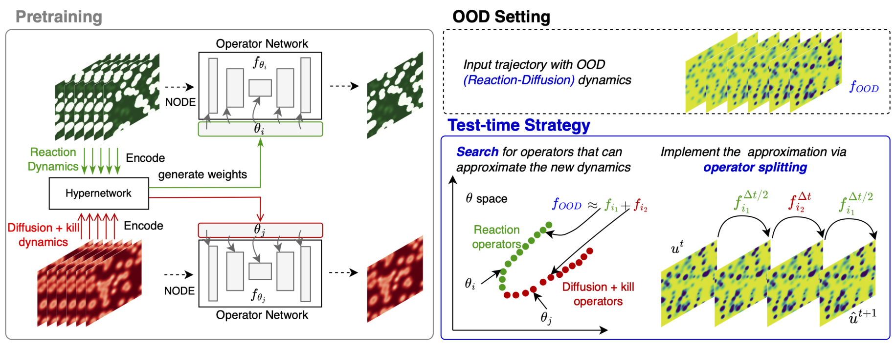
原文 Figure 1，PDF 第 3 页，§3–4。图注释义：预训练得到不同物理机制的算子字典，测试时以算子组合近似未见动力学，并用顺序子步实现演化。 按面板读图。 左半部是训练阶段：绿色轨迹来自反应动力学，红色轨迹来自扩散＋kill 动力学。超网络读取轨迹上下文，分别生成算子网络的参数 θ i , θ j \theta_i,\theta_j θ i , θ j f θ i , f θ j f_{\theta_i},f_{\theta_j} f θ i , f θ j f O O D ≈ f i 1 + f i 2 \mathit f_{\mathrm{OOD}}\approx f_{i_1}+f_{i_2} f OOD ≈ f i 1 + f i 2
变量与机制。 u t u^t u t u ^ t + 1 \widehat u^{t+1} u t + 1 f i Δ t f_i^{\Delta t} f i Δ t i i i Δ t \Delta t Δ t
支持什么、不能推出什么。 该图清楚说明测试时增加计算的对象是字典子集搜索，而预训练权重保持固定。它是方法示意，不能自行证明所选算子就是唯一的真实物理分解，也不能证明近似算子复合具有经典精确流的误差阶；后者取决于学习误差、光滑性、时间离散与兼容的输入输出空间。实际预测证据见图 2–17 及表格。
图 2｜Gray–Scott：单一训练机制能否组合出新形态
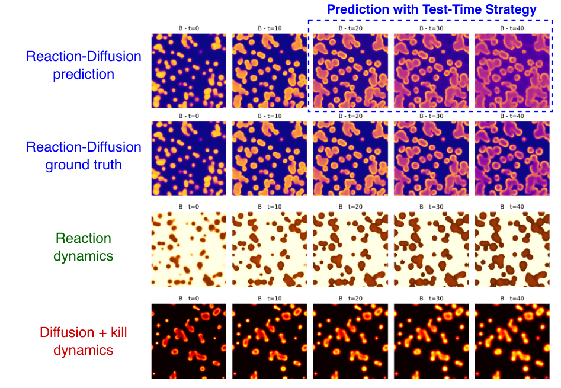
原文 Figure 2，PDF 第 5 页，§5.3。图注释义：组合预测接近未见反应–扩散轨迹，后者与两类单独训练动力学的演化明显不同。 读图方式。 五列对应图中时间标签 t = 0 , 10 , 20 , 30 , 40 t=0,10,20,30,40 t = 0 , 10 , 20 , 30 , 40 B B B L = 16 L=16 L = 16
变量与观察。 每个小面板是二维周期域上的浓度场；数据空间网格为 128 × 128 128\times128 128 × 128
证据边界。 这一示例支持“训练机制的组合可以生成未在训练中直接出现的耦合动力学”的可行性，不能替代表 1 的样本总体评估，也不能只凭视觉认定浓度、守恒量或参数均已准确。跨行配色不同，不应把颜色差异当作误差大小；附录图 10 补充物种 A A A
图 3｜平流–扩散参数平面：外推误差的空间分布
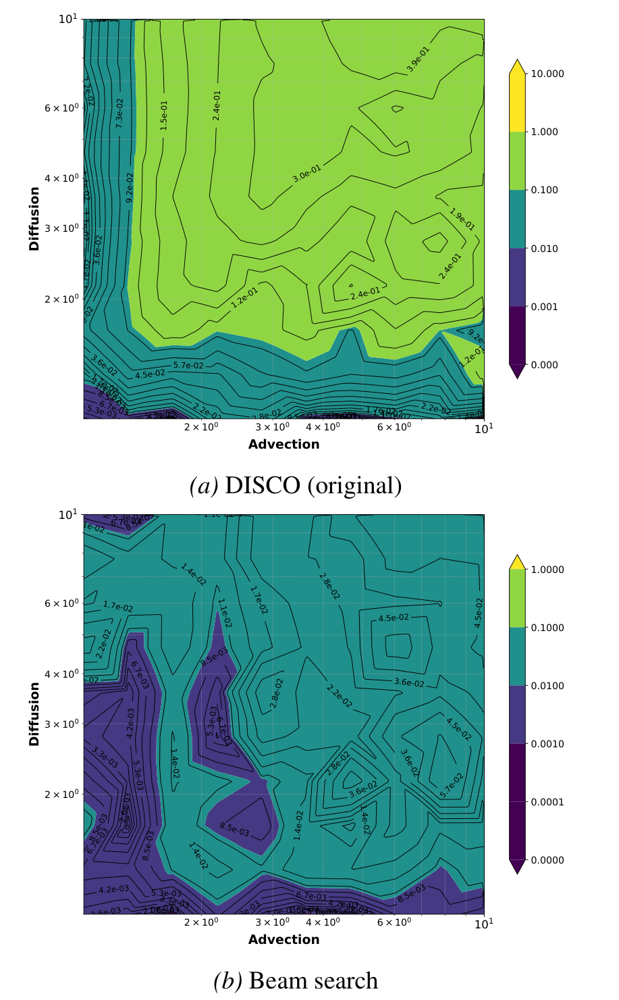
原文 Figure 3，PDF 第 7 页，§5.2–5.3。图注释义：在平流速度与扩散系数组成的网格上比较 34 步 rollout 的平均 NRMSE，越低越好。 坐标、面板与色条。 横轴是平流系数 c c c v v v D D D 1 1 1 3 3 3
最重要的读图提醒。 两面板使用不同色条范围：上图上端为 10 10 10 1 1 1 10 − 1 10^{-1} 1 0 − 1 10 − 2 10^{-2} 1 0 − 2
结论与限制。 该参数地图说明改进分布在多个系数组合，而不只发生于一个选定样本，支持 §5 的“直接编码 OOD 轨迹可能选到不准确算子，字典搜索能改善”的论述。但它没有误差条、重复训练种子的分布或显著性分析，不能推出每个参数点都稳定改善，也不能由该图确定任意更远参数范围、不同初值或不同网格上的可靠性。
图 4｜增加搜索次数：预测与参数识别的经验趋势
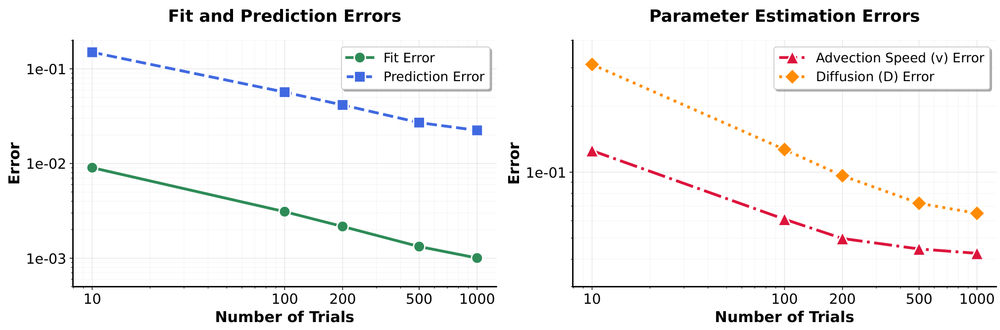
原文 Figure 4，PDF 第 8 页，§5.4。图注释义：在 OOD 平流–扩散任务上，增加 uniform search 次数会降低拟合、预测及参数识别误差。 左面板。 横轴为试验次数（10、100、200、500、1000），采用对数刻度；纵轴为误差，亦采用对数刻度。绿色圆点是适配观察窗口上的拟合 NRMSE，蓝色方点是后续 34 步预测的平均 NRMSE。两条曲线均随预算增加下降，预测误差始终高于拟合误差，说明拟合观察窗口并不等于获得同等质量的未来预测。
右面板。 红色三角是平流速度参数的平均绝对误差（MAE），橙色菱形是扩散系数 MAE。参数来自被选中训练算子的已知物理标签之和，而不是另训练一个系数回归器（§5.4，第 9 页）。两者随试验次数下降，扩散 MAE 在这组展示条件下较大；系数误差单位随对应系数的归一化／物理单位而定，图中没有给具体 SI 单位，不能直接把两种 MAE 当作相同尺度的难度比较。
能支持的说法。 增加候选搜索在这里改善拟合，并伴随更低未来误差和更好参数恢复，为把测试计算投入离散搜索提供经验依据。作者称为“scaling laws”，但图只提供有限预算区间中的近似幂律趋势，没有给通用指数、置信区间或适用到无限预算的理论保证。保留历次最优候选会让拟合目标不升，但不会在数学上保证未来误差单调下降；在字典缺项或噪声条件下仍需独立验证。
图 5｜计算预算：beam search 与随机搜索的效率
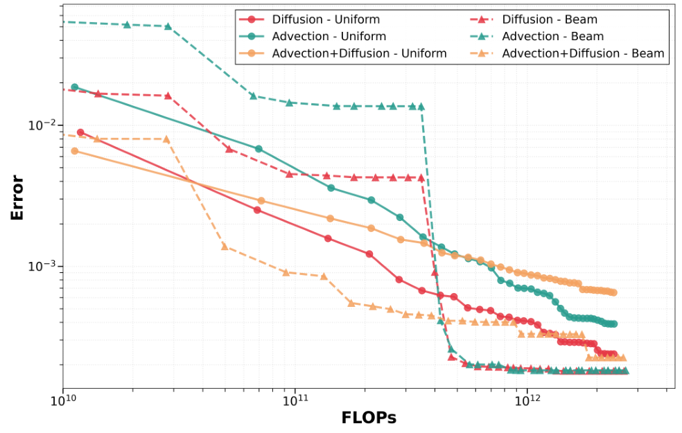
原文 Figure 5，PDF 第 8 页，§5.4。图注释义：在相同累计 FLOPs 视角下，beam search 随组合复杂度扩展产生阶跃式误差下降，uniform search 较平滑下降。 六条线如何分组。 横轴是累计浮点运算量 FLOPs，纵轴是观察窗口的拟合误差，两轴均为对数刻度。红色对应扩散外推，青绿色对应平流外推，橙色对应平流＋扩散；圆点实线是 uniform search，三角虚线是 beam search。要在同一个任务、同一个预算下比较实线与虚线，而不是将不同任务误差混作同一难度。
观察与机制。 uniform search 的曲线较连续地下降。beam search 先评估单算子，继而扩展到二项、三项等组合，因此出现较长平台和明显的下降段；例如青绿色虚线在某一组合扩展阶段迅速下降。图上最小预算附近 beam 并非总比 uniform 好，而在中间预算以及组合能力释放后的区间，beam 通常能用较少 FLOPs 达到更低拟合误差。这个转折说明“结构化扩展有价值”，同时也说明必须给搜索足够预算才能越过单算子的能力上限。
不能从该图推出的结论。 FLOPs 不能直接等同于秒数、显存或能耗，也不能把拟合收益全部当成未来 rollout 收益。不同硬件、批处理及候选缓存会改变墙钟表现。真实单 A100 时间对照在附录 C.7／表 9（PDF 第 19 页）；图中的有限任务与范围不足以证明所有 PDE 都具有相同幂律或相同预算转折。
图 6｜扩散＋色散：长 rollout 的幅值与误差
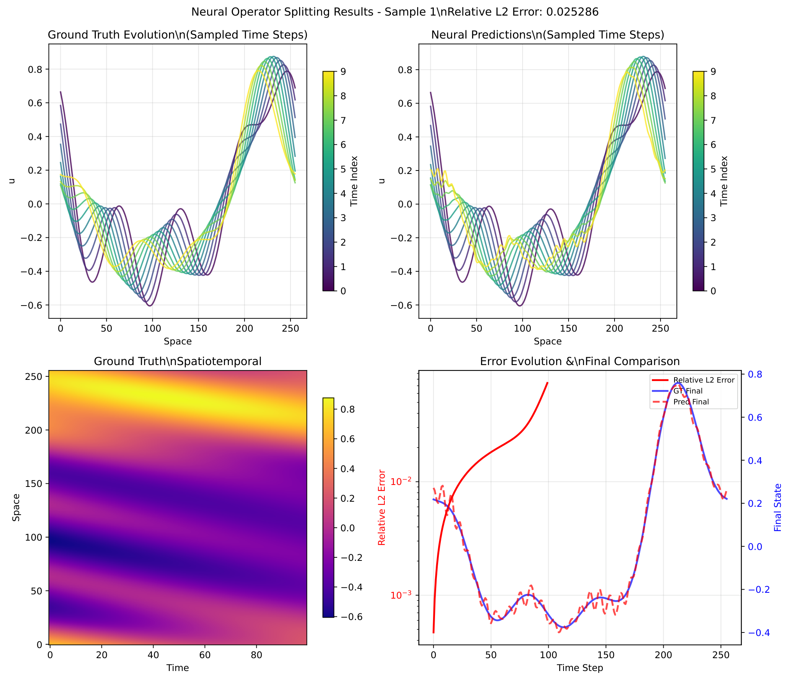
原文 Figure 6，PDF 第 20 页，附录 D。图注释义：用 beam search 选择算子后，递推预测未见扩散＋色散动力学 100 步。 四个面板。 左上与右上分别画真值和预测的多时刻空间剖面，横轴 Space 是 256 个空间采样点的索引，纵轴为场 u u u u u u l = 16 l=16 l = 16
右下必须拆开读。 红色实线按左侧对数纵轴表示逐步相对 L 2 L^2 L 2 0.025286 0.025286 0.025286
观察与证据边界。 真值和预测的大尺度峰谷及变化方向接近，后期预测中可见小尺度起伏；右下红色误差随步数上升，最终剖面亦保留小偏差。这支持两种独立训练机制可以在单个 OOD 样本上组合演化，但同时显示递推误差积累。它不证明任意长时间稳定、色散谱准确、或比所有基线都好；数值总体比较应查表 1。
图 7｜非线性平流＋色散：相位与波形演化
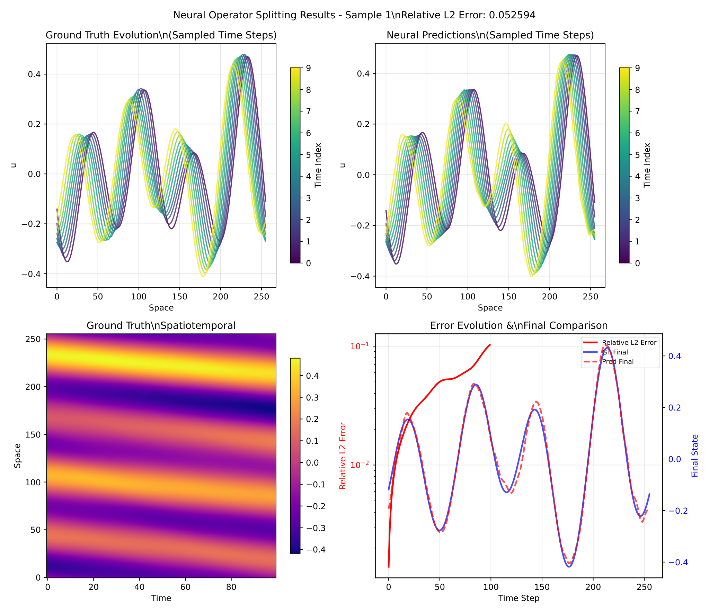
原文 Figure 7，PDF 第 21 页，附录 D。图注释义：beam search 算子组合递推预测非线性平流＋色散 100 步。 各面板与变量。 左上是真值空间剖面，右上是对应预测；颜色 0–9 是抽样时刻的次序，纵轴为 u u u L 2 L^2 L 2
观察。 预测较好保留主要波峰、波谷与随时间移动的总体趋势；某些中间小峰、末端区域可见幅值或相位偏差。误差曲线后期继续增长，不能由上方多条曲线“看起来重合”忽略累积误差。标题显示样本统计误差 0.052594 0.052594 0.052594
支持与不能推出。 该图给“非线性机制与高阶色散的组合仍可用”提供直观例证，与表 1 中这一任务的性能结果相呼应。但未展示直接 DISCO 或其他基线的同一样本图，也未报告相位误差或频谱指标；不能单凭这幅图认定所有波数范围、强非线性或更长 rollout 都可靠。
图 8｜非线性平流＋色散＋扩散：三项耦合
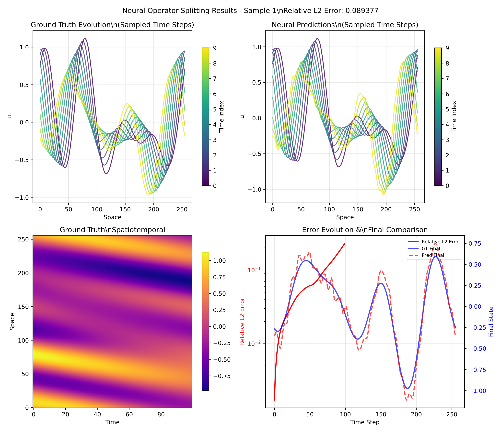
原文 Figure 8，PDF 第 22 页，附录 D。图注释义：仅用分开训练的算子组合，预测非线性平流、色散与扩散共同作用的 100 步动力学。 如何读四面板。 左上是真值抽样空间剖面，右上是预测；纵轴为 u u u L 2 L^2 L 2
观察。 预测保留了主要峰谷与移动趋势，但后期曲线的小尺度抖动、中央弱峰的幅度偏差和深谷的偏差比某些双机制例子明显。右下相对误差持续增长，最终真值与预测的空间差异亦清楚可见；标题报告样本统计误差 0.089377 0.089377 0.089377
证据关系与边界。 它支持三项未知耦合也可由较简单算子构造有效近似，对应表 1 的 All Three 任务。与图 6、7 的视觉差异不足以给出因果的“每增加一项就增加多少误差”规律，因为样本初值与系数也变了。进一步判定误差来源需区分单算子近似、分裂误差及所选系数偏差。
图 9｜非线性平流＋扩散：形状相似仍有累积误差
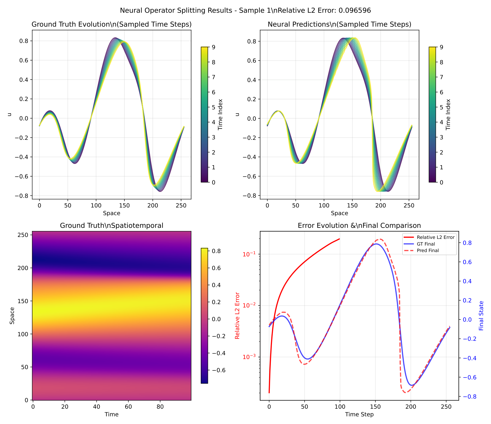
原文 Figure 9，PDF 第 23 页，附录 D。图注释义：beam search 选取算子后递推预测非线性平流＋扩散 100 步。 各面板。 左上与右上是真值、预测的 u u u L 2 L^2 L 2
观察。 上方整体曲线很接近，但最终剖面中的大峰高度、陡降位置及深谷存在差异；红色误差随 rollout 增大，标题的样本统计值为 0.096596 0.096596 0.096596
支持与限制。 该例说明字典组合能覆盖未训练的非线性平流–扩散机制组合，同时显示准确性仍有限。表 1 中这一任务的最优结果来自 Zebra，本文 beam search 并未在七个组合任务中全部胜出；该定性图不能用来反转这一总体比较，也不能与不同样本的图 6–8 排出可靠的任务难度顺序。
图 10｜Gray–Scott 双通道：完整训练／测试机制对照
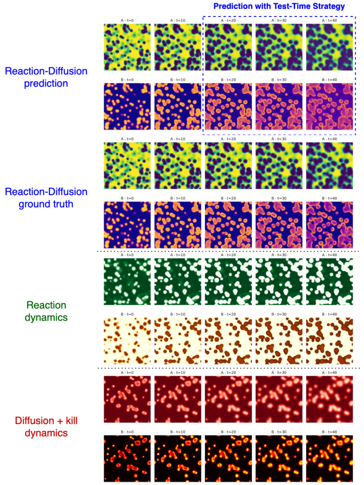
原文 Figure 10，PDF 第 24 页，附录 D。图注释义：图 2 的双通道扩展，同时比较物种 A A A B B B 八行面板的对应。 五列依次为 t = 0 , 10 , 20 , 30 , 40 t=0,10,20,30,40 t = 0 , 10 , 20 , 30 , 40 A , B A,B A , B A , B A,B A , B
变量与观察。 二维小图来自 128 × 128 128\times128 128 × 128 B B B k B kB k B A , B A,B A , B
证据边界。 它补充了图 2 只展示物种 B B B
图 11｜Gray–Scott 样本 0：形态保留与晚期浓度偏差
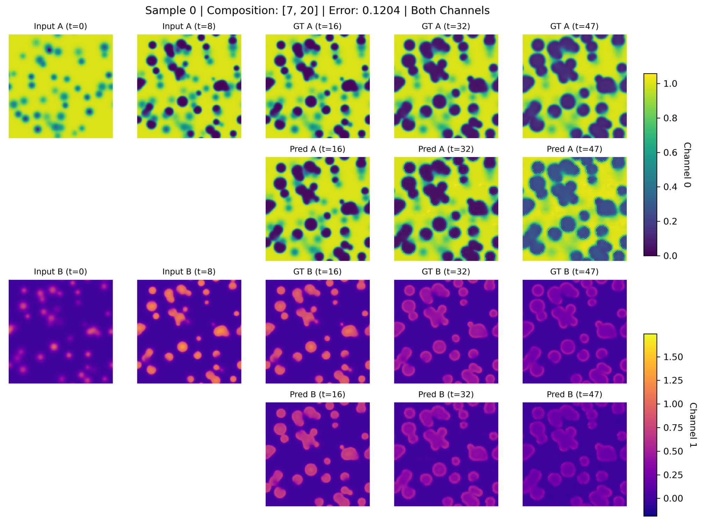
原文 Figure 11，PDF 第 25 页，附录 D。图内样本 0，组合标签 [ 7 , 20 ] [7,20] [ 7 , 20 ] 0.1204 0.1204 0.1204 面板与色条。 第一行前两格显示物种 A A A t = 0 , 8 t=0,8 t = 0 , 8 t = 16 , 32 , 47 t=16,32,47 t = 16 , 32 , 47 A A A B B B A A A B B B t t t L = 16 L=16 L = 16
观察。 预测保留了主要斑点位置及合并形态。在最后展示帧，A A A B B B 128 × 128 128\times128 128 × 128
支持与边界。 这个例子展示了跨上下文进行反应–扩散组合后的形态预测能力，同时提供了晚期幅值误差的证据。标题中的组合编号是字典条目的标签，不能在没有标签映射时把 7 或 20 直接当作物理系数；误差 0.1204 0.1204 0.1204
图 12｜Gray–Scott 样本 55：环状结构与局部幅值偏差
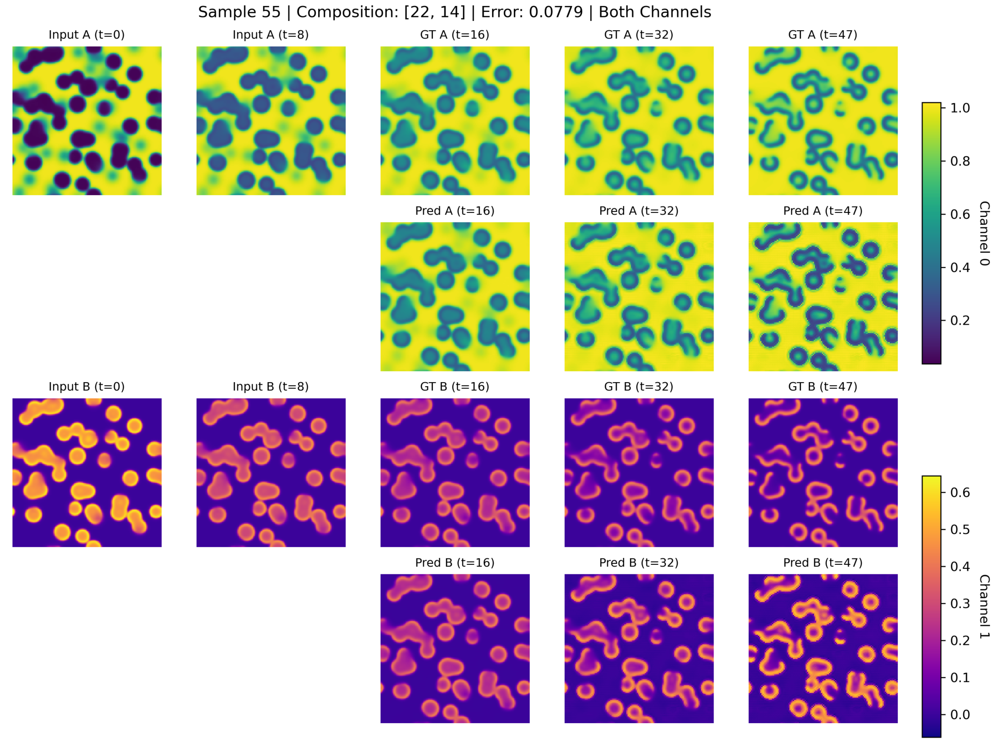
原文 Figure 12，PDF 第 26 页，附录 D。图内样本 55，组合标签 [ 22 , 14 ] [22,14] [ 22 , 14 ] 0.0779 0.0779 0.0779 读图方式与量纲。 前两列是 t = 0 , 8 t=0,8 t = 0 , 8 t = 16 , 32 , 47 t=16,32,47 t = 16 , 32 , 47 A A A B B B 128 × 128 128\times128 128 × 128
观察。 这一样本的初始斑块更容易发展为环状或连通轮廓；预测保持了大多数轮廓的位置与形态。晚期 B B B A A A 0.0779 0.0779 0.0779
支持与不能推出。 与图 11 不同的初值和字典组合展示了方法并非只会一个斑点例子；它不能提供初值泛化的统计保证，也不能说明这两个选中条目是唯一分解。跨样本 B B B
图 13｜Gray–Scott 样本 62：复杂边界的长期预测
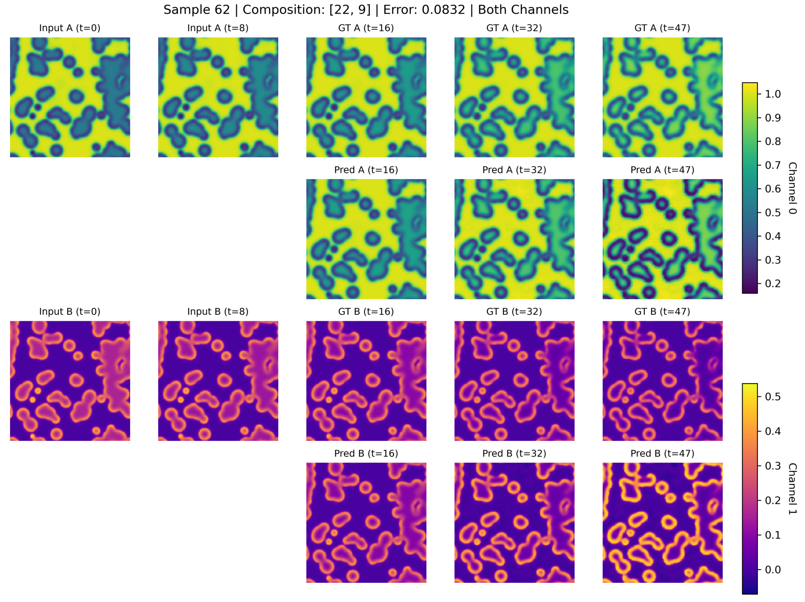
原文 Figure 13，PDF 第 27 页，附录 D。图内样本 62，组合标签 [ 22 , 9 ] [22,9] [ 22 , 9 ] 0.0832 0.0832 0.0832 逐面板对应。 第一与第三行各含两帧输入示例 t = 0 , 8 t=0,8 t = 0 , 8 t = 16 , 32 , 47 t=16,32,47 t = 16 , 32 , 47 A A A B B B
观察。 真值中多种连通弯曲轮廓与孤立环共存；预测在较晚时刻仍保留其主要位置与拓扑外观，但晚期两通道的边缘强度、环宽及局部细节存在可见差异。图内给出的 0.0832 0.0832 0.0832
与正文的关系及边界。 它进一步支持 §5.3 的耦合泛化案例，对图 2 的单例作定性补充。但图 11–13 仍只是三个展示样本，没有选择规则、失败比例或对全参数相图的覆盖证据；不能把“展示图中均保留形态”扩大为“所有反应–扩散形态都准确”。
图 14｜Navier–Stokes：较高黏度下的算子组合
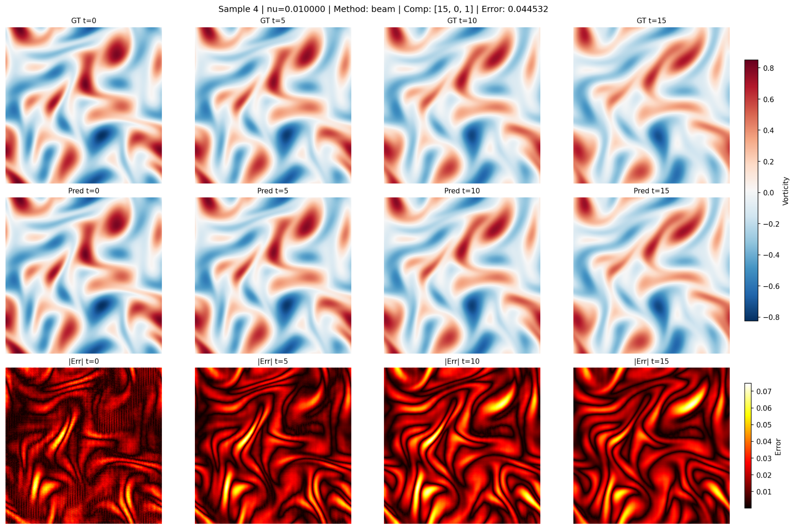
原文 Figure 14，PDF 第 28 页，附录 D。黏度 ν = 10 − 2 \nu=10^{-2} ν = 1 0 − 2 [ 15 , 0 , 1 ] [15,0,1] [ 15 , 0 , 1 ] 0.044532 0.044532 0.044532 面板、变量与时间。 四列为图内 t = 0 , 5 , 10 , 15 t=0,5,10,15 t = 0 , 5 , 10 , 15 ω \omega ω ∣ ω ^ − ω ∣ \lvert\widehat\omega-\omega\rvert ∣ ω − ω ∣ T = 4 T=4 T = 4 [ 0 , 2 π ) 2 [0,2\pi)^2 [ 0 , 2 π ) 2 256 × 256 256\times256 256 × 256
观察。 预测保留了大尺度正负涡量结构及随时间的位移／形变，误差集中于较陡的涡量边界与细丝附近。第三行第一列已非零，说明图中的 t = 0 t=0 t = 0 0.07 0.07 0.07
支持与不能推出。 它展示 Euler 算子与扩散算子在这一 OOD 耦合样本中的有效组合，与表 1 的 Euler＋Diffusion 任务相关。同一样本的直接预测见图 15；这对配图支持个例改进，但没有检测能量／涡量守恒、能谱或长期湍流统计，因而不能作为这些物理一致性的证据。
图 15｜Navier–Stokes：同一样本的直接 DISCO 对照
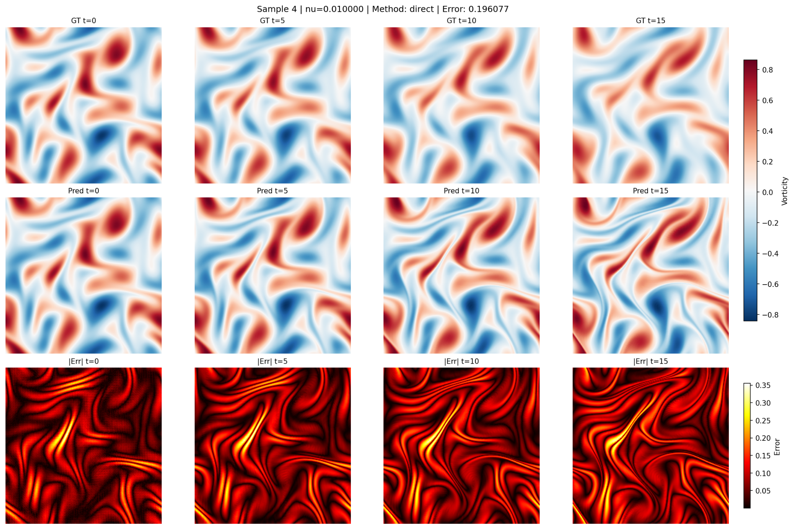
原文 Figure 15，PDF 第 29 页，附录 D。黏度 ν = 10 − 2 \nu=10^{-2} ν = 1 0 − 2 0.196077 0.196077 0.196077 与图 14 成对读。 同样是四个序列索引 t = 0 , 5 , 10 , 15 t=0,5,10,15 t = 0 , 5 , 10 , 15 ∣ ω ^ − ω ∣ \lvert\widehat\omega-\omega\rvert ∣ ω − ω ∣
观察。 直接预测仍画出合理的大尺度涡结构，但较晚时刻涡团形状和细丝与真值偏离更明显。图内样本误差 0.196077 0.196077 0.196077 0.044532 0.044532 0.044532 0.35 0.35 0.35 0.07 0.07 0.07
证据边界。 这对同样本对照是正文性能改善的直观证据，比不同初值之间的图片比较更有解释力。它仍是个例，不证明平均改善倍数恒为 4.4，也不能把全部差距归因于分裂本身：结果共同受字典选择、训练配方与组合机制影响，相关消融见附录 C.4。
图 16｜Navier–Stokes：较低黏度下的算子组合
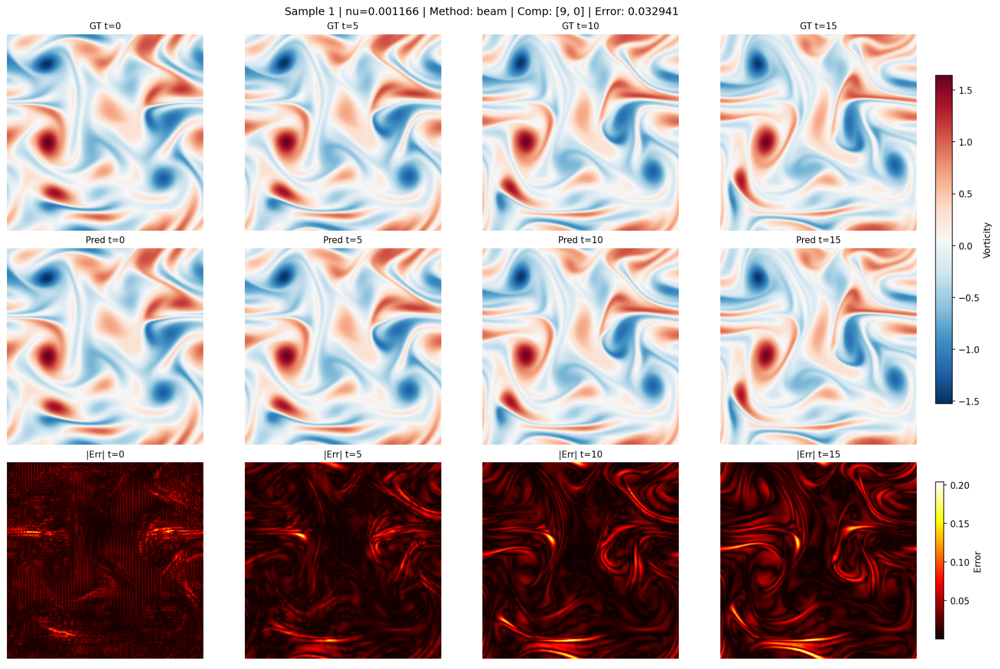
原文 Figure 16，PDF 第 30 页，附录 D。图注写 ν = 10 − 3 \nu=10^{-3} ν = 1 0 − 3 ν = 0.001166 \nu=0.001166 ν = 0.001166 [ 9 , 0 ] [9,0] [ 9 , 0 ] 0.032941 0.032941 0.032941 面板与条件。 第一、二、三行分别为真值涡量、beam search 组合预测、逐点绝对误差；四列是序列索引标签 t = 0 , 5 , 10 , 15 t=0,5,10,15 t = 0 , 5 , 10 , 15 [ 0 , 2 π ) 2 [0,2\pi)^2 [ 0 , 2 π ) 2 256 × 256 256\times256 256 × 256 ν = 10 − 3 \nu=10^{-3} ν = 1 0 − 3
观察。 预测保持了主要涡团、正负涡量分布及细丝的移动。后续误差主要集中在局部强梯度附近，个别细丝有幅值或位置偏差；误差图色标上端约为 0.20 0.20 0.20 0.032941 0.032941 0.032941
支持与边界。 本图说明较低黏度样本也能受益于算子组合，同样本直接预测见图 17。它不能与图 14 的误差值直接推出“黏度降低一定更容易”，因为初值、真实涡量幅度、算子选择和色条均有差异；也不足以评价真实高雷诺数湍流或三维问题。
图 17｜Navier–Stokes：较低黏度的直接 DISCO 对照
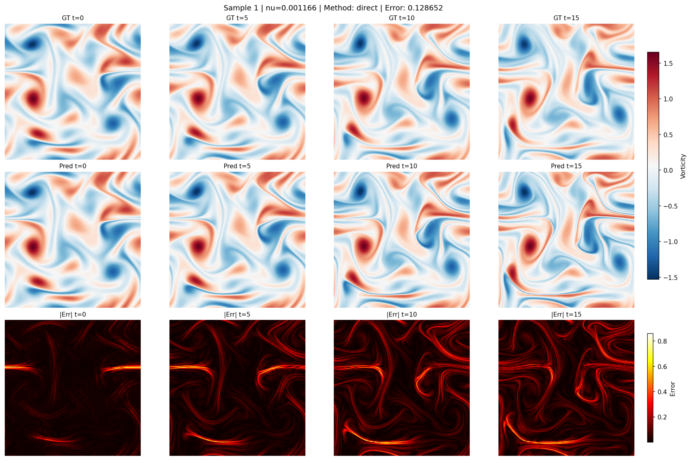
原文 Figure 17，PDF 第 31 页，附录 D。图注写 ν = 10 − 3 \nu=10^{-3} ν = 1 0 − 3 ν = 0.001166 \nu=0.001166 ν = 0.001166 0.128652 0.128652 0.128652 面板与比较方法。 四列时间索引和三行排列完全与图 16 对应，依次是真值 ω \omega ω ∣ ω ^ − ω ∣ \lvert\widehat\omega-\omega\rvert ∣ ω − ω ∣
观察。 直接预测在整体外观上仍与真值相似，但某些涡团及细丝的相位、变形与强度逐渐偏离。样本误差 0.128652 0.128652 0.128652 0.032941 0.032941 0.032941 0.8 0.8 0.8 0.20 0.20 0.20
归纳到哪里为止。 图 14–17 组成两组同样本、同黏度设置下的定性对照，支持测试时搜索与算子组合对 2D Navier–Stokes OOD 轨迹有改善，并与表 1 的平均 NRMSE 结论呼应。它们不能给出不同随机种子或初值下的改善分布，不验证长期能谱与守恒量，也不能消除图注／图内黏度的复现歧义。报告因此将这些图视为总体结果的解释性例证，而非所有条件的可靠性证明。
材料、来源与复现边界
材料 已获取与核查内容 覆盖边界
用户提供的论文 v2 2602.00884v2.pdf，31 页，正文、附录 A–D、全部图注表注。SHA-256：bc7b1a5d7f2829fff2438d172cdf22add13292aebbe44b76e349451f1d689d27唯一数值与图号主来源；未混用 v1。 arXiv 版本页 核查标题、作者、v2 修订日期与许可。v1 提交日期为 2026-01-31，v2 为 2026-08-10。 摘要页只用于书目信息，全文依据本地 PDF；该页面未列出另一个独立补充 PDF。 官方代码仓库 核查 README、搜索与分裂实现；方法节列出与论文伪代码的差异及所读代码版本。 属于报告日期的外部实现核查，不自动视为 v2 实验的原始提交。未运行训练、基准或参数恢复。 公开检查点 模型卡列出四类方程检查点。 已确认公开页面；未下载权重或校验其对应的训练配方。Navier–Stokes 路径在 GitHub README 与模型卡分别写为 best-checkpoint.ckpt 与 last.ckpt，复现时应以实际文件与实验配置核对。 公开数据集 disco-ad 、disco-combined 、disco-rd 、disco-ns （官方仓库所链）核查公开索引与部分数据卡，未下载完整数据；在线预览器报错不等于原始文件不可获取。训练/测试划分、实际采样时间和模型输入归一化仍需从所用配置及 HDF5 文件复核。 项目网页与海报 官方 README 另链项目网页和 ICML 海报。 作为演示材料线索，不作为额外实验全文或独立补充材料使用；本报告原图覆盖指用户提供的 31 页 PDF。
原图归属： 17 幅图均来自 Serrano、Han、Oyallon、Ho、Morel 的上述 v2 论文，作者保留著作权；arXiv 所链许可为 CC BY 4.0 。本报告只做 PDF 渲染与区域裁剪，不改变图内数据、标签或公式；图注和分析为中文释义及独立阅读判断，不能视为作者背书。每图给出原图号、PDF 页码及源文件。
证据分级： 表格数字与实验条件标为原文结果；比值核算、数值分析解释、迁移建议与研究设计属于报告判断。报告没有追读全部参考文献，也没有进行全面新颖性检索，因此不把作者的“首次”声明当作独立确认的事实。
复现的最小记录： 固定论文版本、代码提交、检查点、字典抽样种子、算子来源、是否允许重复、分裂顺序、时间步、上下文与预测区间；记录搜索候选数和实际前向调用数；用验证集决定停止阈值或适配预算，随后只在测试集汇报结果。参数恢复还需保留各训练算子的真实系数元数据。公开资源提供了复现入口，但这份报告未执行数值复现。
覆盖核对与检查说明
已按 31 页预览逐页核对正文和附录的图表。全部原图为图 1–17：正文图 1–5，附录图 6–17；每张图均保留完整面板、图题、坐标、图例或色条，并在本报告中独立嵌入和解释。没有发现有实质信息的未编号插图。原表 1–9 与算法 1–2 均在对应章节分析。
逐图“提取、嵌入、解释”的对应关系见 图覆盖清单 。纸面图 3 的等值线标签较密；图 6–9 将不同横轴含义的曲线放在同一面板；图 16–17 的黏度标注存在差异。这些是原始材料的读图边界，报告没有重绘或静默修正。
已完成 PDF 页面与裁图视觉核查，以及 HTML 锚点、相对图片路径、本地数学字体、LaTeX 渲染、图清单和表格数据的静态检查。按用户要求未执行浏览器桌面、窄屏或打印测试，故这些实际浏览器显示效果未做视觉验证。报告采用白底、内嵌样式和预渲染公式，不依赖远程脚本；无 JavaScript 也可读取正文、图片和公式。
论文分析完成；浏览器视觉测试按用户要求跳过。返回顶部